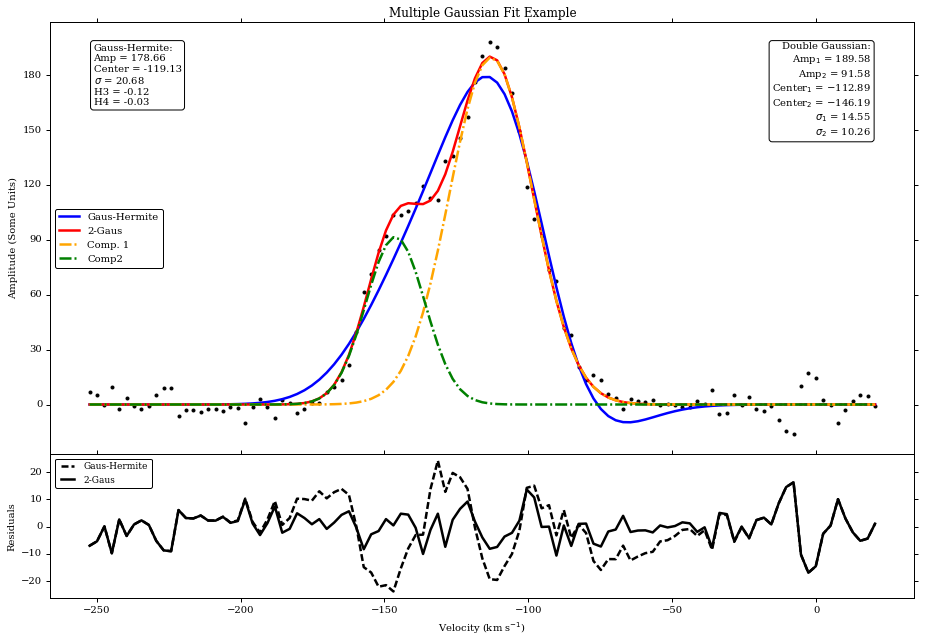

There are several data fitting utilities available. We will focus on two:
scipy.optimize
lmfit.minimize
Using both those modules, you can fit any arbitrary function that you define and it is, also, possible to constrain given parameters during the fit. Another important aspect is that both packages come with useful diagnostic tools.
Fitting Basics
The fitting we discuss here is an iterative process.
First, we define our desired function, and calculate values given certain parameters
Then we calculate the difference between the initial and the new values
The final aim is to minimize this difference (specifically, we generally minimize the sum of the squares of these differences).
Several examples can be found at http://www.scipy.org/Cookbook/FittingData
Minimization is usually done by the method of least squares fitting. There are several algorithms available for this minimization.
The most common is the Levenberg-Marquardt:
- Susceptible to finding local minima instead of global
- Fast
- Usually well-behaved for most functions
- By far the most tested of methods, with many accompanying statistics implemented
Other methods include the Nelder-Mead, L-BFGS-B, and Simulated Annealing algorithms
Goodness-of-Fit (GoF)
There are several statistics that can help you determine the goodness-of-fit. Most commonly used are:
- reduced chi-squared
- Standard error
You can get these and other tools for free with lmfit.minimize
Example 1: Fit a quadratic curve with no constraints
First, let’s try fitting a simple quadratic to some fake data:
$$ y = ax^2 + bx + c $$
What we will do:
- Generate some data for the example
- Define the function we wish to fit
- Use scipy.optimize to do the actual optimization
Let’s assume the following:
- The x-data is an array from -3 to 10
- The y-data is $x^2$, with some random noise added.
- Let’s put our initial guesses for the coefficients a,b,c into a list called p0 (for fit parameters)
import numpy as np
#Generate the arrays
xarray1=np.arange(-3,10,.2)
yarray1=xarray1**2
#Adding noise
yarray1+=np.random.randn(yarray1.shape[0])*2
p0=[2,2,2] #Our initial guesses for our fit parameters
Since we are dealing with a quadratic fit we can use a cheap & easy method for polynomials (only): scipy.polyfit()
This method involves the least amount of setup while it simply outputs an array of the coefficients that best fit the data to the specified polynomial order.
%matplotlib inline
from scipy import polyfit
from scipy.optimize import leastsq as lsq
import matplotlib.pyplot as plt
# polyfit(x, y, deg)
fitcoeffs=polyfit(xarray1,yarray1,2)
print "Parameter fitted using polyfit"
print fitcoeffs
Parameter fitted using polyfit
[ 1.00811611 -0.21729382 0.6272779 ]
Define the function you want to fit, remembering that p will be our array of initial guesses to the fit parameters, the coefficients a, b, c:
def quadratic(p,x):
y_out=p[0]*(x**2)+p[1]*x+p[2]
return y_out
#Is the same as
#quadratic = lambda p,x: p[0]*(x**2)+p[1]*x+p[2]
Then we define a function that returns the difference between the fit iteration value and the initial data:
quadraticerr = lambda p,x,y: quadratic(p,x)-y
This difference or residual is the quantity that we will minimize with scipy.optimize. To do so, we call the least-squares optimization routine with scipy.optimize.leastsq() that stores the parameters you fit in the zeroth element of the output:
fitout=lsq(quadraticerr,p0[:],args=(xarray1,yarray1))
paramsout=fitout[0] #These are the fitted coefficients
covar=fitout[1] #This is the covariance matrix output
print('Fitted Parameters using scipy\'s leastsq():\na = %.2f , b = %.2f , c = %.2f'
% (paramsout[0],paramsout[1],paramsout[2]))
Fitted Parameters using scipy's leastsq():
a = 1.01 , b = -0.22 , c = 0.63
Now to get an array values for the results, just call your function definition with the fitted parameters, while the residuals, of course, will just be their difference from the original data:
fitarray1=quadratic(paramsout,xarray1)
residualarray1=fitarray1-yarray1
plt.rc('font',family='serif')
fig1=plt.figure(1)
frame1=fig1.add_axes((.1,.3,.8,.6))
#xstart, ystart, xwidth, yheight --> units are fraction of the image from bottom left
xsmooth=np.linspace(xarray1[0],xarray1[-1])
plt.plot(xarray1,yarray1,'.')
plt.plot(xsmooth,quadratic(paramsout,xsmooth))
frame1.set_xticklabels([]) #We will plot the residuals below, so no x-ticks on this plot
plt.title('Quadratic Fit Example')
plt.ylabel('y-data')
plt.grid(True)
frame1.annotate('$y$ = %.2f$\cdot x^2$+%.2f$\cdot x$+%.2f'%(paramsout[0],paramsout[1],paramsout[2]), \
xy=(.05,.95),xycoords='axes fraction',ha="left",va="top",bbox=dict(boxstyle="round", fc='1'))
from matplotlib.ticker import MaxNLocator
plt.gca().yaxis.set_major_locator(MaxNLocator(prune='lower')) #Removes lowest ytick label
frame2=fig1.add_axes((.1,.1,.8,.2))
plt.plot(xarray1,quadratic(paramsout,xarray1)-yarray1)
plt.ylabel('Residuals')
plt.grid(True)
plt.show()

Example 2: More complex functions, with constraints
Often we want to set limits on the values that our fitted parameters can have, for example, to be sure that one of the parameters can’t be negative, etc.
To do this, we can use scipy.optimize.minimize() or another useful package could be lmfit.minimize():
- We create an lmfit.Parameters() object
- We can set limits for the parameters to be fit
- We can even tell some params not to vary at all
The Parameters() object is then updated with every iteration.
Let’s use more real data for a typical real-world application: fitting a profile to spectral data. * The data: stacked velocity-amplitude spectra from a VLA observation * The functions: - A modified Gaussian to include Hermite polynomials (approximations to skew and kurtosis) - A double gaussian (gaus1 + gaus2 = gausTot)
The data have been downloaded from https://science.nrao.edu/science/surveys/littlethings/data/wlm.html
import pyfits
cube=pyfits.getdata('WLM_NA_ICL001.FITS')[0,:,:,:]
cubehdr=pyfits.getheader('WLM_NA_ICL001.FITS')
cdelt3=cubehdr['CDELT3']/1000.; crval3=cubehdr['CRVAL3']/1000.; crpix3=cubehdr['CRPIX3'];
minvel=crval3+(-crpix3+1)*cdelt3; maxvel=crval3+(cube.shape[0]-crpix3)*cdelt3
chanwidth=abs(cdelt3)
stackspec=np.sum(np.sum(cube,axis=2),axis=1)
vels=np.arange(minvel,maxvel+int(cdelt3),cdelt3)
The velocity array in the cube goes from positive to negative, so let’s reverse it to make the fitting go smoother.
vels=vels[::-1]
stackspec=stackspec[::-1]
We are going to use the default Marquardt-Levenberg algorithm. Note that fitting results will depend quite a bit on what you give as initial guesses – ML finds LOCAL extrema quite well, but it doesn’t necessarily find the global extrema. In short, do your best to provide a good first guess to the fit parameters.
I said that we want to fit this dataset with a more complex model. Let me explain it a bit before to proced.
- Standard Gaussian:
$ f(x) = A e^{\frac{-g^2}{2}} $
$ g = \frac{x-x_c}{\sigma} $
- Multiple Gaussians:
$ F(x) = \sum_i f_i(x) = A_1e^{\frac{-g_1^2}{2}} + A_2e^{\frac{-g_2^2}{2}} + \dots $
- Gauss-Hermite Polynomial:
$f(x) = Ae^{\frac{-g^2}{2}} [ 1+h_3(-\sqrt{3}g+\frac{2}{\sqrt{3}}g^3 ) + h_4 (\frac{\sqrt{6}}{4}-\sqrt{6}g^2+\frac{\sqrt{6}}{3}g^4)] $
- H_3 → (Fisher) Skew: asymmetric component:
$\xi_1 \sim 4\sqrt{3}h_3$
- H_4 → (Fisher) Kurtosis: how ‘fat’ the tails are:
$xi_2 \sim 3+8\sqrt{6}h_4$
$\xi_f = \xi_2-3$
$\xi_f \sim 8\sqrt{6}h_4$$
Set up the lmfit.Parameters() and define the Gauss-Hermite function:
from lmfit import minimize, Parameters
p_gh=Parameters()
p_gh.add('amp',value=np.max(stackspec),vary=True);
p_gh.add('center',value=vels[50],min=np.min(vels),max=np.max(vels));
p_gh.add('sig',value=3*chanwidth,min=chanwidth,max=abs(maxvel-minvel));
p_gh.add('skew',value=0,vary=True,min=None,max=None);
p_gh.add('kurt',value=0,vary=True,min=None,max=None);
def gaussfunc_gh(paramsin,x):
amp=paramsin['amp'].value
center=paramsin['center'].value
sig=paramsin['sig'].value
c1=-np.sqrt(3);
c2=-np.sqrt(6)
c3=2/np.sqrt(3);
c4=np.sqrt(6)/3;
c5=np.sqrt(6)/4
skew=paramsin['skew'].value
kurt=paramsin['kurt'].value
g=(x-center)/sig
gaustot_gh=amp*np.exp(-.5*g**2)*(1+skew*(c1*g+c3*g**3)+ kurt*(c5+c2*g**2+c4*(g**4)))
return gaustot_gh
Now do the same for the double gaussian
Bounds amp : 10% of max to max
center : velocity range
disp : channel width to velocity range
# Double Gaussian (labeled below as ..._2g)
p_2g=Parameters()
p_2g.add('amp1',value=np.max(stackspec)/2.,min=.1*np.max(stackspec),max=np.max(stackspec));
p_2g.add('center1',value=vels[50+10],min=np.min(vels),max=np.max(vels));
p_2g.add('sig1',value=2*chanwidth,min=chanwidth,max=abs(maxvel-minvel));
p_2g.add('amp2',value=np.max(stackspec)/2.,min=.1*np.max(stackspec),max=np.max(stackspec));
p_2g.add('center2',value=vels[50-10],min=np.min(vels),max=np.max(vels));
p_2g.add('sig2',value=3*chanwidth,min=chanwidth,max=abs(maxvel-minvel));
def gaussfunc_2g(paramsin,x):
amp1=paramsin['amp1'].value;
amp2=paramsin['amp2'].value;
center1=paramsin['center1'].value;
center2=paramsin['center2'].value;
sig1=paramsin['sig1'].value;
sig2=paramsin['sig2'].value;
g1=(x-center1)/sig1
g2=(x-center2)/sig2
gaus1=amp1*np.exp(-.5*g1**2)
gaus2=amp2*np.exp(-.5*g2**2)
gaustot_2g=(gaus1+gaus2)
return gaustot_2g
And now the functions that compute the difference between the fit iteration and data. In addition, define a function for a simple single gaussian.
gausserr_gh = lambda p,x,y: gaussfunc_gh(p,x)-y
gausserr_2g = lambda p,x,y: gaussfunc_2g(p,x)-y
gausssingle = lambda a,c,sig,x: a*np.exp(-.5*((x-c)/sig)**2)
We will minimize with lmfit, in order to keep limits on parameters:
fitout_gh=minimize(gausserr_gh,p_gh,args=(vels,stackspec))
fitout_2g=minimize(gausserr_2g,p_2g,args=(vels,stackspec))
fitted_p_gh = fitout_gh.params
fitted_p_2g = fitout_2g.params
pars_gh=[fitout_gh.params['amp'].value,
fitout_gh.params['center'].value,
fitout_gh.params['sig'].value,
fitout_gh.params['skew'].value,
fitout_gh.params['kurt'].value]
pars_2g=[fitted_p_2g['amp1'].value,
fitted_p_2g['center1'].value,
fitted_p_2g['sig1'].value,
fitted_p_2g['amp2'].value,
fitted_p_2g['center2'].value,
fitted_p_2g['sig2'].value]
Finally, if you want to create arrays and residuals of the final fit values:
fit_gh=gaussfunc_gh(fitted_p_gh,vels)
fit_2g=gaussfunc_2g(fitted_p_2g,vels)
resid_gh=fit_gh-stackspec
resid_2g=fit_2g-stackspec
print('Fitted Parameters (Gaus+Hermite):\nAmp = %.2f , Center = %.2f , Disp = %.2f\nSkew = %.2f , Kurt = %.2f' \
%(pars_gh[0],pars_gh[1],pars_gh[2],pars_gh[3],pars_gh[4]))
print('Fitted Parameters (Double Gaussian):\nAmp1 = %.2f , Center1 = %.2f , Sig1 = %.2f\nAmp2 = %.2f , Center2 = %.2f , Sig2 = %.2f' \
%(pars_2g[0],pars_2g[1],pars_2g[2],pars_2g[3],pars_2g[4],pars_2g[5]))
Fitted Parameters (Gaus+Hermite):
Amp = 178.66 , Center = -119.13 , Disp = 20.68
Skew = -0.12 , Kurt = -0.03
Fitted Parameters (Double Gaussian):
Amp1 = 189.58 , Center1 = -112.89 , Sig1 = 14.55
Amp2 = 91.58 , Center2 = -146.19 , Sig2 = 10.26
fig3=plt.figure(3,figsize=(15,10))
f1=fig3.add_axes((.1,.3,.8,.6))
plt.plot(vels,stackspec,'k.')
pgh,=plt.plot(vels,fit_gh,'b')
p2g,=plt.plot(vels,fit_2g,'r')
p2ga,=plt.plot(vels,gausssingle(pars_2g[0],pars_2g[1],pars_2g[2],vels),'-.',color='orange')
p2gb,=plt.plot(vels,gausssingle(pars_2g[3],pars_2g[4],pars_2g[5],vels),'-.',color='green')
f1.set_xticklabels([]) #We will plot the residuals below, so no x-ticks on this plot
plt.title('Multiple Gaussian Fit Example')
plt.ylabel('Amplitude (Some Units)')
f1.legend([pgh,p2g,p2ga,p2gb],['Gaus-Hermite','2-Gaus','Comp. 1','Comp2'],prop={'size':10},loc='center left')
from matplotlib.ticker import MaxNLocator
plt.gca().yaxis.set_major_locator(MaxNLocator(prune='lower')) #Removes lowest ytick label
f1.annotate('Gauss-Hermite:\nAmp = %.2f\nCenter = %.2f\n$\sigma$ = %.2f\nH3 = %.2f\nH4 = %.2f' \
%(pars_gh[0],pars_gh[1],pars_gh[2],pars_gh[3],pars_gh[4]),xy=(.05,.95), \
xycoords='axes fraction',ha="left", va="top", \
bbox=dict(boxstyle="round", fc='1'),fontsize=10)
f1.annotate('Double Gaussian:\nAmp$_1$ = %.2f\nAmp$_2$ = %.2f\nCenter$_1$ = %.2f\nCenter$_2$ = %.2f\n$\sigma_1$ = %.2f\n$\sigma_2$ = %.2f' \
%(pars_2g[0],pars_2g[3],pars_2g[1],pars_2g[4],pars_2g[2],pars_2g[5]),xy=(.95,.95), \
xycoords='axes fraction',ha="right", va="top", \
bbox=dict(boxstyle="round", fc='1'),fontsize=10)
f2=fig3.add_axes((.1,.1,.8,.2))
resgh,res2g,=plt.plot(vels,resid_gh,'k--',vels,resid_2g,'k')
plt.ylabel('Residuals')
plt.xlabel('Velocity (km s$^{-1}$)')
f2.legend([resgh,res2g],['Gaus-Hermite','2-Gaus'],numpoints=4,prop={'size':9},loc='upper left')
